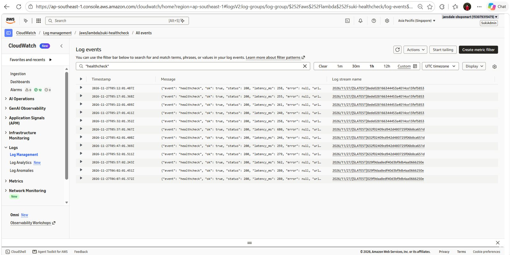
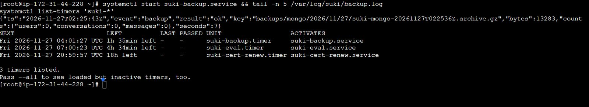
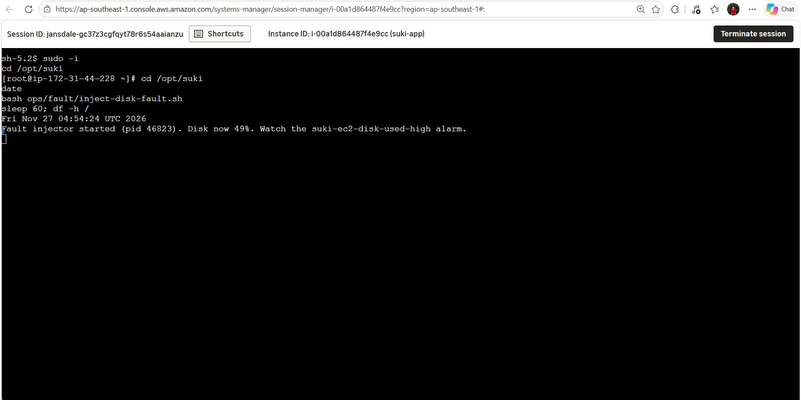
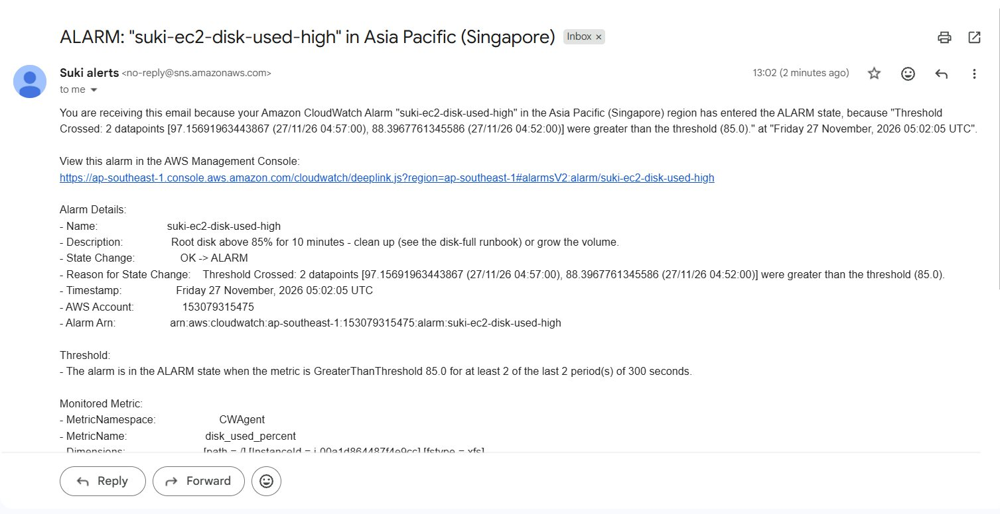
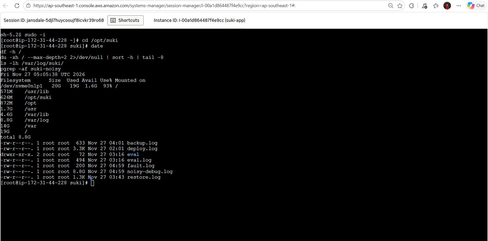
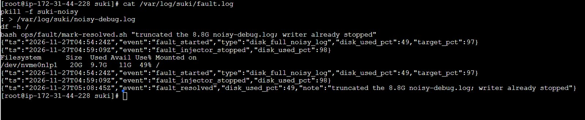
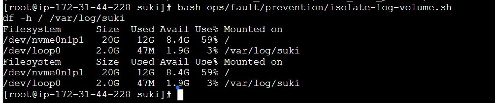

Automation and the incident
Automations (WS-E)
| # | Automation | Trigger | What it does | Code |
|---|---|---|---|---|
| 1 | Health check | EventBridge, every 5 min | Calls /health on the public HTTPS URL, publishes Suki/HealthCheckOK; alarm after two failures | infra/cloudformation/suki-stack.yaml (HealthCheckFunction) |
| 2 | Scheduled backup | systemd timer, every 6 h (00/06/12/18 PHT) | MongoDB dump + manifest + config tarball to S3; metric; e-mail on failure | ops/backup/backup.sh |
| 3 | Scheduled test run | systemd timer, 03:00 and 15:00 PHT | 32 test questions through the gateway; pass rate to CloudWatch, S3 and e-mail | ops/eval/run_eval.py |
| 4 (S) | Deploy on push | GitHub Actions on main | Tests, uploads content to S3, redeploys through SSM Run Command (OIDC, no keys) | .github/workflows/deploy.yml |
Proof they ran unattended (at least twice each)
| Automation | Run 1 (timestamp) | Run 2 (timestamp) | Where the log line is |
|---|---|---|---|
| Health check | 2026-11-27 13:12:01 PHT | 13:17:01 PHT (then every 5 min, 12 runs to 14:07) | /aws/lambda/suki-healthcheck |
| Scheduled backup | 2026-11-27 12:01 PHT (timer) | next run 18:00 PHT, after our deadline; manual runs at 10:25 and 11:42 PHT use the same service | /suki/automation stream …-backup |
| Scheduled test run | 2026-11-27 11:12 PHT (manual start of the same service) | 15:00 PHT (timer) | /suki/automation stream …-eval + e-mail |


Incident: the disk filled up (WS-F)
How the fault was created: sudo ops/fault/inject-disk-fault.sh starts a background process that writes debug log lines to
/var/log/suki/noisy-debug.log until the root disk reaches 97%, the kind of thing that happens when debug logging is left on.
We then investigated it as if we did not know the cause.
Timeline
| Event | Time (PHT) | Source |
|---|---|---|
| Fault started | 12:54:24 (disk 49%) | fault.log fault_started |
Alarm fired (suki-ec2-disk-used-high) | 13:02:05 (e-mail at 13:02) | alarm history / e-mail |
| We noticed and started investigating | 13:05:38 | |
| Fixed (service healthy, disk normal) | 13:08:45 (disk 49%) | fault.log fault_resolved |
| Time to detect (start → alarm) | 7 min 41 s | disk reached 98% at 12:59:09; alarm needs 2 × 5 min above 85% |
| Time to fix (alarm → fixed) | 6 min 40 s |
Investigation
# 13:05:38 PHT
$ df -h /
/dev/nvme0n1p1 20G 19G 1.6G 93% /
$ du -xh / --max-depth=2 | sort -h | tail -8
... 4.6G /var/lib 8.8G /var/log 14G /var 19G /
$ ls -lh /var/log/suki/
-rw-r--r--. 1 root root 8.8G Nov 27 04:59 noisy-debug.log
$ pgrep -af suki-noisy
(nothing: the writer had already stopped itself at 98%)What users saw: Suki kept answering (health checks stayed 200), because the disk stopped at 98% and MongoDB still had a little room. A few more minutes of logging would have filled the last 2%, at which point MongoDB cannot write and logins and new chats fail.



Root cause
A process with debug logging left on wrote unbounded log lines into /var/log/suki/noisy-debug.log. That folder sat on the same 20 GB root disk as MongoDB and Docker, and logrotate only runs once a day, so nothing stopped it: the disk went from 49% to 98% in under 5 minutes (12:54 → 12:59 PHT). Had it reached 100%, MongoDB could not write, so logins and new chats would have failed for every user.
Fix and prevention
Fix (13:08 PHT): confirmed the writer was gone (pkill -f suki-noisy), truncated the 8.8 GB file with : > /var/log/suki/noisy-debug.log (truncate, not rm, in case a process still holds it open), checked df -h / was back to 49%, and recorded the time with mark-resolved.sh.
Prevention: ops/fault/prevention/isolate-log-volume.sh moved /var/log/suki onto its own 2 GiB volume. A runaway log can now fill only that volume, never the disk MongoDB needs. Proof: we ran the same fault again: /var/log/suki hit 100% (2.0G) while / stayed at 59%, far below the 85% alarm line, and no disk alarm fired. We then emptied the log volume.


Runbook: root disk filling up
# RUNBOOK: Root disk above 85% on the Suki instance
Owner: Suki ops (Yusi / Manipon) Last tested: 2026-11-27 Takes: ~15 min Ask: the other teammate
1. WHAT THIS IS FOR
Free up disk space on the Suki EC2 instance and stop it filling again.
2. HOW YOU KNOW YOU NEED IT
Alarm "suki-ec2-disk-used-high" e-mail; or answers failing / HTTP 5xx with MongoDB write errors.
Command that shows the problem:
aws ssm start-session --target <instance-id> # from your laptop
df -h /
3. WHAT IT AFFECTS
At 100% MongoDB cannot write: logins and new chats fail for every user. Below 100% nothing yet.
4. HOW TO DO IT
Step 1: sudo du -xh / --max-depth=2 2>/dev/null | sort -h | tail -15 -> you should see the biggest folders
Step 2: sudo du -sh /var/log/suki/* /var/lib/docker/* 2>/dev/null | sort -h | tail -> find the culprit
Step 3: sudo lsof +L1 -> deleted-but-open files still holding space
Step 4: if it is a log file: sudo truncate -s 0 <file> (truncate, don't rm, if a process holds it open)
if it is old Docker images: sudo docker image prune -af
if a runaway process is writing: identify with sudo lsof <file> then stop it
Step 5: df -h / -> you should see usage back under 70%
Step 6: cd /opt/suki && sudo docker compose --project-directory app -f app/docker-compose.yml ps -> all "Up"
Step 7: sudo /opt/suki/ops/fault/mark-resolved.sh "what you did" (records the time-to-fix)
5. HOW TO CHECK IT WORKED
- [ ] the original symptom is gone (df -h / below 85%)
- [ ] ask the test question "How much is a women's haircut?" and get ₱350
- [ ] no new alarms for 10 minutes; suki-ec2-disk-used-high back to OK
6. HOW TO UNDO IT
Truncation and pruning cannot be undone; never delete anything under /opt/suki/app/data (database).
If a container will not start afterwards: sudo /opt/suki/infra/scripts/deploy.sh
7. GOTCHAS
<fill in from your real incident: e.g. rm on an open log file frees nothing until the process stops>
8. CHANGE HISTORY
YYYY-MM-DD - first version after the disk-full incident